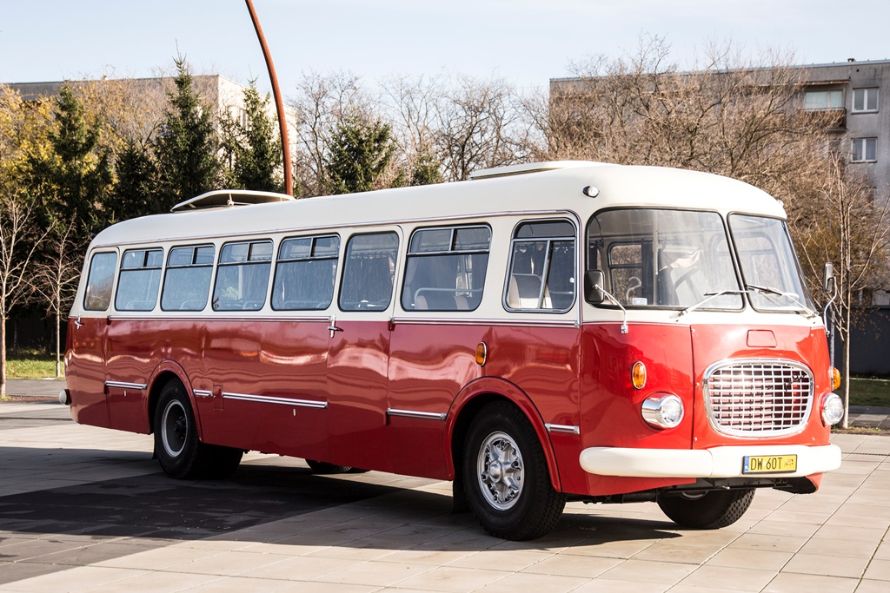

Menu
Jelcz_043
Jest to polski autobus międzymiastowy, produkowany w latach 1959–1986 przez Jelczańskie Zakłady Samochodowe, w Jelczu obecnie Jelcz-Laskowice.
Model ten stanowił licencyjną odmianę czechosłowackiego autobusu Škoda 706 RTO.
Z powodu swojego wyglądu zwany potocznie ogórkiem.